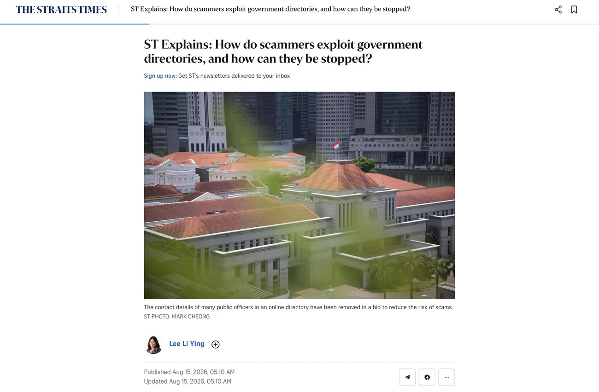

“The platform itself is the red flag”

When The Straits Times asked me how scammers exploit our government directories, my answer probably wasn’t the one people expected. Yes, a public list of names, titles and numbers lends an impersonator credibility. You look up the officer, find a real match, and your guard drops. But the bigger shift is in where these scams now happen.
Government official impersonation scams more than doubled last year, to 3,363 cases, with $242.9 million lost. As the telcos clamped down on spoofed local and agency numbers, the fraudsters simply moved house. As I told ST, they have shifted to messaging apps like WhatsApp, where they can spoof numbers the telcos cannot police. They dress it up, too: official logos as profile pictures, and, in the bolder cases, someone in uniform against an office backdrop on a video call.
My advice is blunt, because it needs to be. No Singapore agency handles case matters over WhatsApp. The platform itself is the red flag, so you don’t even need to work out whether the officer is real. That one rule protects more people than any amount of detail-checking.
I also don’t think stripping every directory is the answer. Changing all our contact details at once could open fresh gaps in the confusion. It is a bit like changing your house number to stop junk mail. The lasting fix is the human layer. Make “pause, and verify on a number you looked up yourself” a reflex, and keep reminding people that officials will never ask you to move money or hand over passwords. That belief in education is a big part of the work I do with the Digital Defence Alliance Singapore.
There is a reason this matters to us at CWG Innovations, beyond good citizenship. The very same trick, a convincing message that says “do this now”, is what fools an AI agent. Give an agent your inbox and your files, and an attacker no longer has to break in. They just leave instructions it will read and obey. That is exactly what we built RealRelay.ai to defend against. Security is not bolted on after the agent is built. It is tested continuously inside the platform, by an agent that thinks like an attacker within the limits you set.
Scam calls, spoofed apps, autonomous agents. The channel keeps changing, but the discipline does not. Assume you will be targeted, make the easy attacks hard, and never hand your judgement to a stranger on the phone, or to a machine.
Aaron